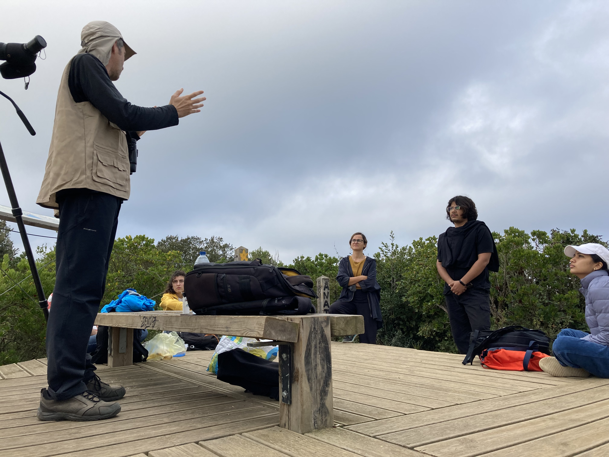
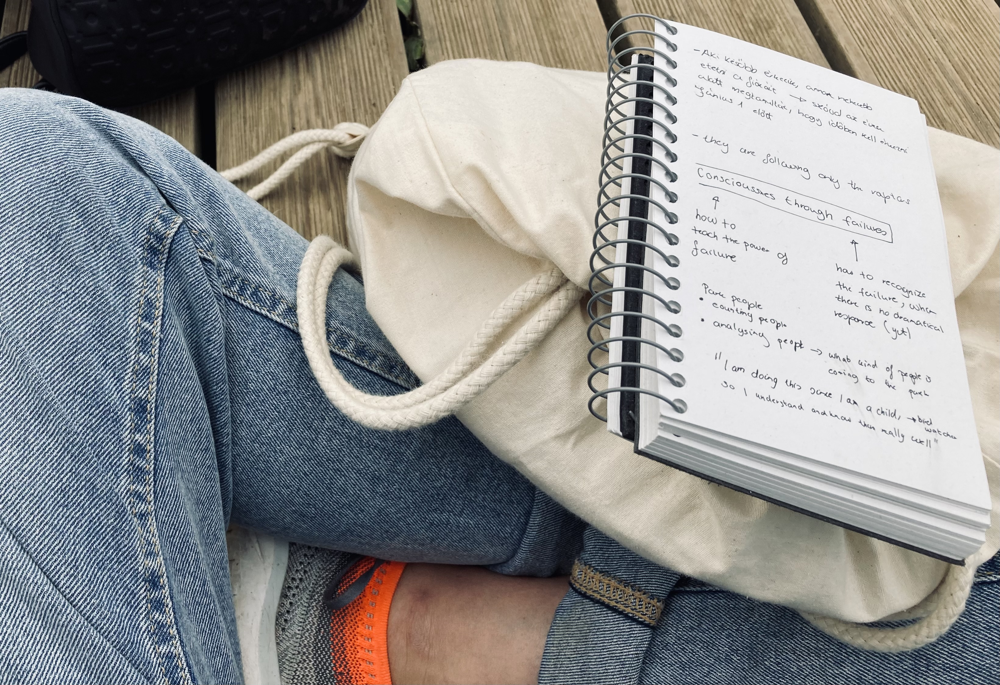
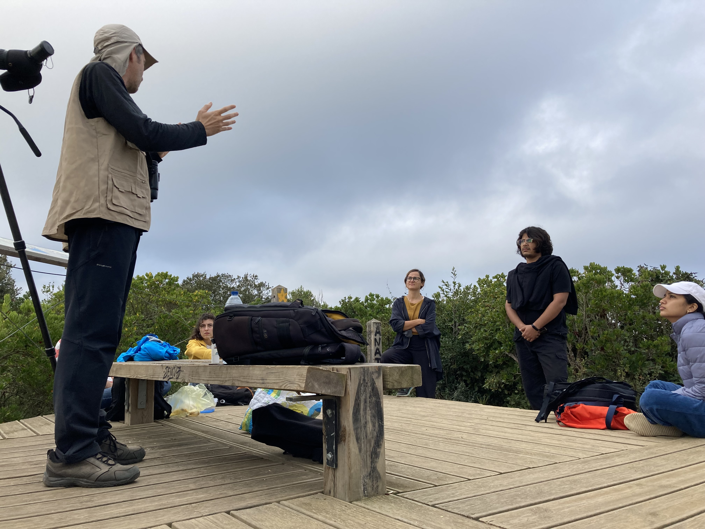
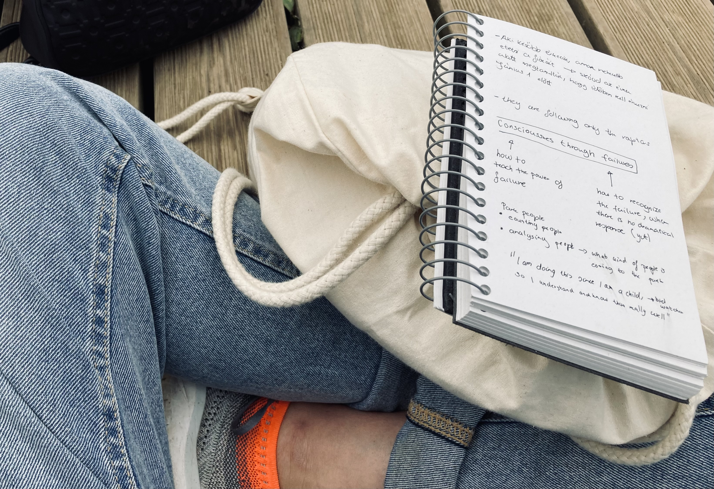

WEEK 2
Last week was an amazing opportunity to change my way of looking at things from a whole different point of view. I am craving for these opportunities… as a designer and as a hopelessly curious person. I can’t be more happy about last week, when we got a new telescope and new eyes from Mariana. The new eyes show us weak signals everywhere and every time. Just like the bird watcher’s eyes and telescope at Collserola Natural Park. The bird watcher’s eyes just turned every time during his passionate presentation, when there was some movement in the air, he was looking for his weak signals there, just like us on the ground of our new neighbourhoods….
My experience… The experience was breathtaking to me, I experienced the same weak signal by myself as I was looking for - how to enable agency, by showing different kind of perspectives. Going up the hill I was looking at old and new plants how they live together, and what support or repression does the older plants give to the younger ones, either for their growth or against their growth. From this point I became really curious about thinking of educational development from the perspective of biomimicry. Another weak signal I got, was from the bird watcher, how he explained the connection between birds’ migration and the arrival of their descendants. On the way down of the hill I tried to focus more on people’s behaviour around me, how they take care of each other, how they support each other. Just like when we met a group of kids on their excursion without electricity, just with manual locating tools - us ‘grown ups’ were equipped with many google maps on our phones, but we were the ones who had help from the kids to find our way. - They were very enthusiastic to guide us and to explain us something we didn’t know, but they did.
My main weak signals… From the bottom of the hill, on the way home I created my own cards rolling through the neighbourhoods. From the one card I choose: Designing habits, I broke it down to three others: ‘Future of education’, ‘Generational connection in cities’ and ‘The agency of kids’. I decided to create my own weak signals when… I kicked back a ball to some school kids in a park where there were many older people on the benches and many kids, no middle aged people and just by accident me, the ‘youngster’ one, with no connection and with surprised faces when kicking back the ball. What I am currently working on… is to find the correct places for these weak signals in my fight and to find how they are connected to each other? What is their structure for a future where we all know we have the freedom of speech and agency? Last but not least to see if these weak signals are really ingredients for this future or not?
Points of resonance… The way how Marina made groups from us is such a great approach, I loved seeing how our small steps, how our small thoughts created big collective engines, brains from us. The future I resonated with became futures we resonated with, including many many new aspects of the future, that is coming from different cultural backgrounds, education and way of seeing things as individuals. We got agency to express it, thanks to Mariana and Oscar and their method of finding our paths and our voices. This is something that should be with us from a very early age. Talking through our own education experiences, topics where education is a must, alternative ways of sharing knowledge led us to a week signal, we named unlearning learning for now. This is a method that us privileged students, such as MDEF will be able to study, but what about others? How can we spread this way of thinking to everyone?
Next steps… This weak signals need to evolve in my design space and in my head in the next few days and weeks to be able and do the next steps. For that I have 4 people in mind to talk to, yet 1 experiment I’m looking forward to, and some new skills I’ll try to develop. I already started talking to a classmate of mine from my BA studies from Hungary. She is studying Social and Ecological Design in Bolzano, and just when catching up after one year, turned out her fight is really similar to mine. She would like to collaborate with the Social Design Network (an international network founded by my university). Not just her school is part of this network, but also Elisava and the foundation of our interests, our first university. To achieve my research goals I have to be in connection with many different communities from many countries, with different educational systems and governments as I believe, I would like this fight to be distributed and opened to everyone for participation. I will also connect an MDEF alumni who was also dealing with kids agency. As well as Barcelona’s Chief Architect Office, who I met 4 days before I left Budapest in a permaculture in the city centre. He had a presentation about how to make a city public. I am looking forward to get to know their project about The Tactical urbanism to protect school environments. Besides that, I will contact the team of FabLab to hear more about the project of Remix the School. For these kind of activities and making connections I will follow Oscars statement, that “This master is always about collaboration, where you have to find your own voice.” - for that I’ll try to train my intuitive skills and my vibrant self, what makes me flexible - by analysing how did I feel about the activities, how would I feel about these ways of making new connections and experiencing new things for my fight.